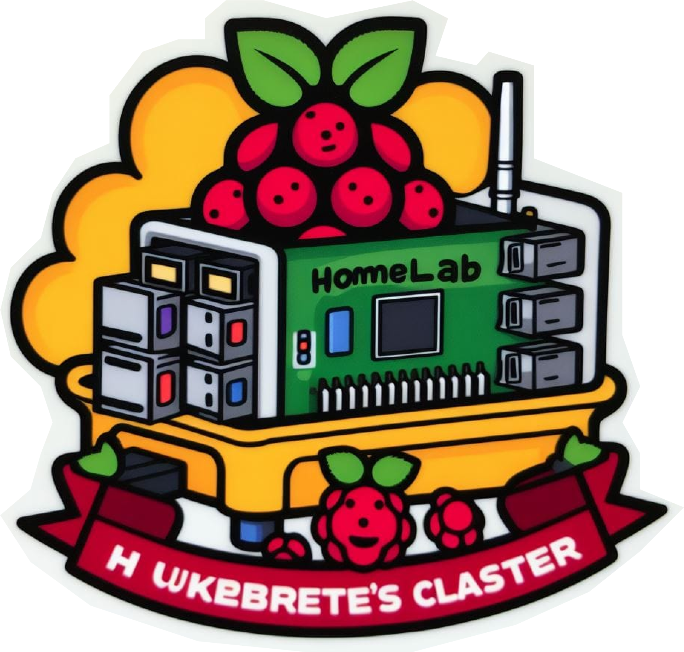

🤠
Este é um blog pessoal sobre tópicos de tecnologia, desenvolvimento de software e outros temas.
Pressione m
Últimas Publicações
- Criando um jogo interativo “real-time” com Kafka, kSQL e Vert.x 16/12/2022
- Retorno de processamento assíncrono com Redis e GraphQL Subscriptions 15/10/2022
- Testes com Consumer-Driven Contracts 24/10/2019
- (English) The Lazy World of Clojure 08/10/2019
- Medindo qualidade do serviço Uber X em Natal/RN 23/09/2017
- C++eleste - Jogo da cobrinha autônomo 17/06/2017
- ECMAScript 6 e como usar 23/03/2017
- Aplicação real-time com socket.io (parte 1) 22/03/2017
- Scraprice - API de monitoramento de preços 21/05/2016
Projetos

O FinGPT é um AI-wrapper do ChatGPT com capacidade de fornecer insights e buscas em arquivos de releases financeiros de empresas brasileiras listadas na bolsa. A segunda versão faz acesso à internet e notícias. A IA foi uma experimentação e foi tirada do ar em meados de agosto de 2023. Você ainda pode ver o vídeo demonstração na landing page do FinGPT. Tornarei o projeto open-source em breve 🤞
Finalmente montei o meu home cluster com Raspberry Pi 4 (Model B). O setup possui basicamente: o k3s, uma versão “light” do Kubernetes, Istio, Kiali, Zipkin, Prometheus, Grafana e ArgoCD. O cluster expõe alguns sistemas na web (de forma segura) graças à Cloudflare.

A ideia do cluster é estudar práticas de desenvolvimento cloud native usando Kubernetes e service mesh. Além de expor eventualmente alguns projetos futuros.
Este trabalho está licenciado com uma Licença Creative Commons - Atribuição-NãoComercial 4.0 Internacional.